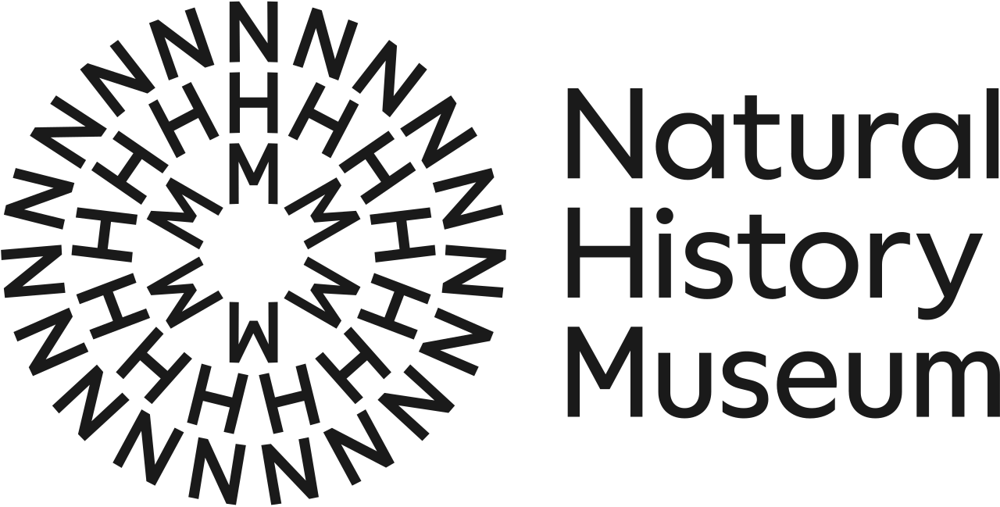

홈 > 브랜드 매거진 > Helsinki City Museum
Helsinki City Museum
Helsinki City Museum는 2016년에 기록된 Designed by Werklig 계열의 브랜드 아이덴티티 사례입니다. Werklig가 아이덴티티 작업의 디자이너로 기록되어 있습니다. 로고, 타입, 컬러, 애플리케이션 섹션으로 구성된 시각 시스템입니다.
산업 분야 미디어·엔터테인먼트 · 공개 등급 편집 검수 · 브랜드 평가 4 ★
He
Helsinki City Museum
한눈에 보는 브랜드
브랜드 관점
공개 메타데이터와 에셋 요약을 기준으로 아이덴티티 구조를 확인할 수 있습니다.
시작과 성장
헬싱키 시립박물관은 헬싱키와 그 시민의 삶에만 헌정된 세계 유일의 박물관으로, 2016년 5월 원로원 광장 옆 알렉산테린카투에 1750년대부터 1920년대까지 지어진 다섯 채의 역사 건물을 현대 건축으로 연결한 새 본관을 열며 정체성을 새로 갖추었다. 헬싱키 브랜딩 스튜디오 베르클리그가 2015년 여름부터 박물관과 협업해 가을 동안 새 비주얼 아이덴티티를 설계했고, 이 작업은 새 공간 이전과 누구나 헬싱키와 사랑에 빠질 기회를 가진다는 박물관 비전에 맞춰 진행되었다.
베르클리그는 박물관 소장품 가운데 옛 대중교통 승차권, 야회 프로그램, 100년 된 무도회 입장권, 각종 행사 광고지 같은 일상 인쇄물을 영감의 출발점으로 삼았다. 베르클리그는 2008년 헬싱키에서 설립된 독립 브랜드 에이전시로, 핀란드 의회와 헬싱키시 그래픽 아이덴티티 등을 작업했다.
제품과 서비스
베르클리그가 만든 핵심 요소는 하트가 결합된 대문자 H 로고로, 헬싱키와 사랑에 빠진다는 비전을 담았다. 박물관 전용 서체로 팔크만, 시그네, 고비니우스 세 종을 새로 디자인했고, 화장실·엘리베이터·카페 안내 사인은 팔크만을 기반으로 했다.
색과 타이포그래피는 옛 트램 승차권, 브로슈어, 신문, 포장지, 광고지에서 채집한 분홍·주황·녹색을 섞은 팔레트로 구성했으며, 대부분의 적용물은 옛 인쇄물을 반영해 두 가지 색의 듀오톤으로 처리했다. 아이덴티티는 문구류, 명함, 굿즈, 광고 캠페인, 사인, 웹사이트까지 확장 적용되었다.
사람들
현재 상태
새 본관은 2017년 뮤지엄+헤리티지 국제상을 받았고 2018년 유럽 올해의 박물관상에서 특별상을 받았다. 박물관은 입장료가 무료이며 하카살미 빌라, 시민의 집, 노동자 주거 박물관, 트램 박물관 등 분관을 함께 운영한다.
약 100만 장의 사진과 45만 점의 유물을 소장하며, 2024년에는 30만 명 넘는 관람객으로 핀란드에서 두 번째로 많이 찾은 박물관으로 집계되었다.
타임라인
BI/CI 변천사
확인된 BI/CI 이미지가 아직 없습니다.
함께 읽을 브랜드
 브랜드·비즈니스 · 편집 검수Time
브랜드·비즈니스 · 편집 검수TimeTime는 2023년에 기록된 Designed by For the People 계열의 브랜드 아이덴티티 사례입니다. For The People가 아이덴티티 작업의 디...

미디어·엔터테인먼트 · 편집 검수Natural History MuseumNatural History Museum는 2023년에 기록된 Designed by Pentagram 계열의 브랜드 아이덴티티 사례입니다. Nomad, Pentagr...
He
Helsinki
브랜드·비즈니스 · 편집 검수HelsinkiHelsinki는 2018년에 기록된 Designed by Werklig 계열의 브랜드 아이덴티티 사례입니다. Werklig가 아이덴티티 작업의 디자이너로 기록되어...
OS
OSESP
미디어·엔터테인먼트 · 편집 검수OSESPOSESP는 2024년에 기록된 Sound 계열의 브랜드 아이덴티티 사례입니다. Polar가 아이덴티티 작업의 디자이너로 기록되어 있습니다. 로고, 타입, 컬러, 아...
YO
YO!
브랜드·비즈니스 · 편집 검수YO!YO!는 2016년에 기록된 Designed by Paul Belford Ltd 계열의 브랜드 아이덴티티 사례입니다. Paul Belford Ltd가 아이덴티티 작업...
Be
Beams
미디어·엔터테인먼트 · 편집 검수BeamsBeams는 2023년에 기록된 Sound 계열의 브랜드 아이덴티티 사례입니다. Only가 아이덴티티 작업의 디자이너로 기록되어 있습니다. 로고, 타입, 컬러, 아트...
 미디어·엔터테인먼트 · 편집 검수Expo '74
미디어·엔터테인먼트 · 편집 검수Expo '74Expo '74는 1972년에 기록된 World Expos 계열의 브랜드 아이덴티티 사례입니다. Lloyd L. Carson가 아이덴티티 작업의 디자이너로 기록되어...
NN
NN North Sea Jazz Festival
미디어·엔터테인먼트 · 편집 검수NN North Sea Jazz FestivalNN North Sea Jazz Festival는 2022년에 기록된 Sound 계열의 브랜드 아이덴티티 사례입니다. Studio Dumbar/DEPT가 아이덴티티...